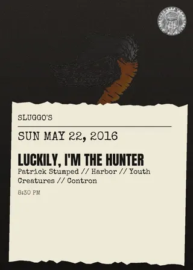
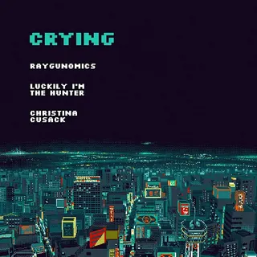
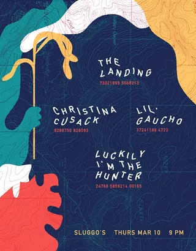

Luckily I'm The Hunter
pcola local4 shows on the diypensacola record since 2016
on the record since March 2016, first seen at sluggo's on a bill with the landing and christina cusack. last seen December 2017 at chizuko; the record's been quiet since.
- first playedMar 10, 2016 · sluggo's
- most played atsluggo's ×3 shows
- busiest year2016 · 3 shows
- biggest lineup5 acts · May 2016
flyer wall
 Dec 25, 2017 · chizuko
Dec 25, 2017 · chizuko
May 22, 2016 · sluggo's
Apr 25, 2016 · sluggo's
Mar 10, 2016 · sluggo'spast shows
- 2017
- 25Dec 2017Luckily I'm The Hunter, Pablo Lite, Precubed, Blssrchizuko
- 2016
- 22May 2016Luckily I'm The Hunter, Patrick Stumped, Harbor, Youth Creatures, Contronsluggo's
- 25Apr 2016Crying, Raygunomics, Luckily I'm The Hunter, Christina Cusacksluggo's
- 10Mar 2016The Landing, Christina Cusack, Lil' Gaucho, Luckily I'm The Huntersluggo's
shared bills with
christina cusack ×2blssrcontroncryingharborlil' gauchopablo litepatrick stumpedprecubedraygunomicsthe landingyouth creatures
act pages are built automatically from the show archive, so something may be off: a misspelled name, a missing link, the wrong type, or a bad local/touring call. no disrespect meant. wrong on any of that, or want a listen link (youtube or bandcamp) or live footage added? send it in.